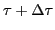
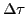
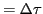
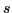
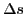
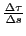
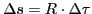
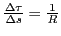
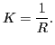

= angle that the tangent at P makes with the -axis,
and

= angle made by the tangent at a neighboring point P.
Then we say
 = total curvature of arc PP.
If the point P with its tangent be supposed to move along
the curve to P, the total curvature (
)
would measure the total change in direction, or rotation,
of the tangent; or, what is the same thing, the total
change in direction of the arc itself. Denoting by 
the length of the arc of the curve measured from some
fixed point (as A) to P, and by  the length of
the arc P P, then the ratio

measures the average change in direction per unit
length of arc12.1.
Since, from Figure 12.1,
,
or
,
it is evident that this ratio is constant everywhere
on the circle. This ratio is, by definition, the
curvature of the circle, and we have

(12.1)
The curvature of a circle equals the reciprocal of its radius.